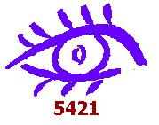
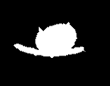
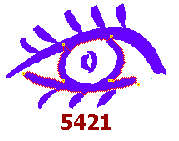
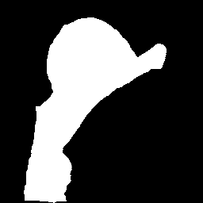
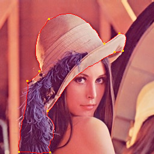
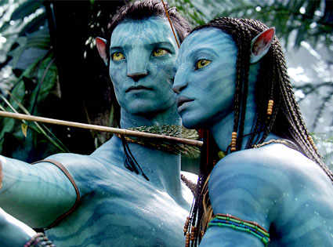
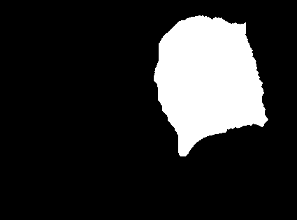
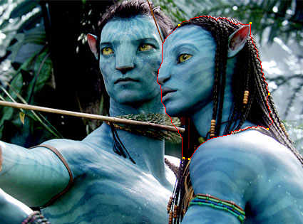

COMP 5421 Project 1: Intelligent Scissors
Artifact

Intelligent Scissors Images and Masks
| Original |
Mask |
Contour |
|  |
 |
 |
|
 |
 |
|  |
 |
 |
Additional Features
- Snapping: Snapping was implemented by searching the local 3x3 window of pixels for the pixel with the highest sum of costs (likely to be an edge pixel). Snapping made it slightly easier to get a more precise cut.
- Blurring: Blurring was added as an optional feature. Blurring made the edges more blurred, and made the scissors more likely to cut through the edges rather than go around.